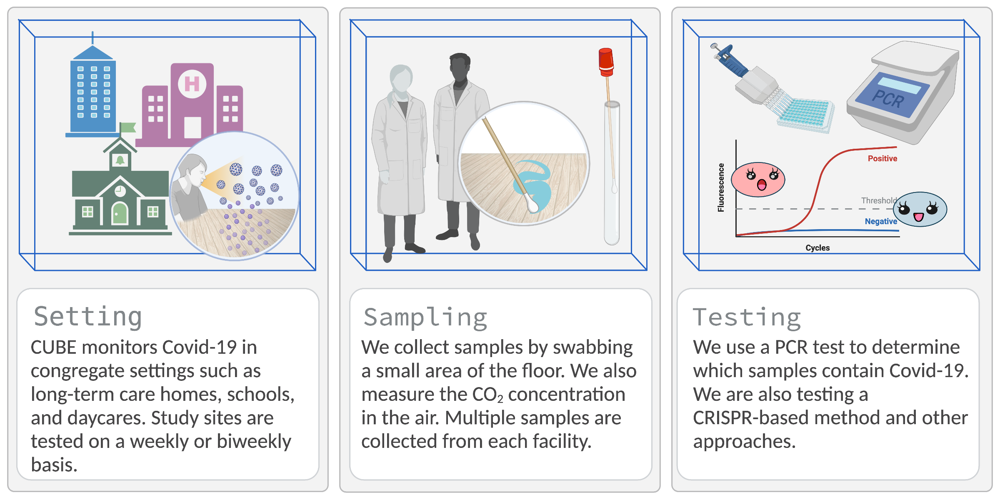

COVID-19 in the Urban Built Environment
Developing environmental sampling as a method for monitoring SARS-CoV-2
in congregate settings
About the CUBE study

-
The COVID-19 in the Urban Built Environment (CUBE) project seeks to
develop environmental sampling as a spatially-resolved method for
monitoring COVID-19 in congregate settings such as long-term care homes
(LTC), universities, public schools, and daycares.
-
We collect samples by swabbing floors; then, the swabs are tested for
COVID-19 using an RT-qPCR
assay developed by DNA Genotek
and/or a novel CRISPR-based device.
-
Currently, we are focused on facilities located in Toronto, Ottawa, and
Sault Ste. Marie.
About the CUBE study
{kind=link}
- The COVID-19 in the Urban Built Environment (CUBE) project seeks to develop environmental sampling as a spatially-resolved method for monitoring COVID-19 in congregate settings such as long-term care homes (LTC), universities, public schools, and daycares.
- We collect samples by swabbing floors; then, the swabs are tested for COVID-19 using an RT-qPCR assay developed by DNA Genotek and/or a novel CRISPR-based device.
- Currently, we are focused on facilities located in Toronto, Ottawa, and Sault Ste. Marie.
Study Locations
Our research team is currently monitoring 32 buildings in Toronto, Ottawa, and Sault Ste. Marie, including 10 long-term care homes, 13 schools and day-cares, and 6 university buildings. Click any city to expand.
Publications
Mike Fralick, Caroline Nott, Jason Moggridge, Lucas Castellani, Ashley
Raudanskis, David Guttman, Aaron Hinz, Nisha Thampi, Alex Wong, Doug
Manuel, Allison McGeer, Evgueni Doukhanine, Hebah Mejbel, Veronica
Zanichelli, Madison Burella, Sylva Donaldson, Pauline Wang, Rees Kassen,
Derek MacFadden
medRxiv 2022.06.28.22276560; doi: https://doi.org/10.1101/2022.06.28.22276560
Aaron Hinz, Lydia Xing, Evgueni Doukhanine, Laura A. Hug, Rees Kassen,
Banu Ormeci, Richard J. Kibbee, Alex Wong, Derek MacFadden, and Caroline
Nott.
FACETS 20 January 2022. 7(): 82-97. https://doi.org/10.1139/facets-2021-0139
Learn more
CUBE @ Your Facility
Contribute to CUBE
Contact us
Frequently Asked Questions
Research Team
Sawith Abeygunawardena
Sawith is the NOHFC Research Intern at the Sault Ste. Marie Academic Medical Association and he is currently assisting with on-site swabbing in Sault Ste. Marie.
Madison Burella
Madison is a senior medical student at the Northern Ontario School of Medicine and is currently assisting with on-site swabbing in Sault Ste. Marie.
Tasha Burhunduli
Tasha is a research assistant for the CUBE study. Tasha is currently pursuing an Honours degree in Health Sciences with a Concentration in Disability and Chronic Illness at Carleton University.
Dr. Lucas Castellani
Dr. Castellani is an infectious diseases physician at the Sault Area Hospital and Assistant Professor at the Northern Ontario School of Medicine.

Evgueni Doukhanine
Molecular biologist at DNA Genotek specializing in microbiome research and development of chemical reagents and collection devices to facilitate stabilization of primary samples.
Dr. Michael Fralick
Mike is the Toronto Lead for CUBE, Assistant Professor at University of Toronto, Clinician Scientist at Sinai Health, and Locum general internist at The Sault Area Hospital.
Dr. David Guttman
David is a Professor in the Department of Cell and Systems Biology at the University of Toronto and Director for the Centre of the Analysis of Genome Evolution and Function.
Alex Hicks
Alex is a masters student supervised by Dr. Rees Kassen at the University of Ottawa. She is involved in sample processing and previously sample collection for CUBE.
Aaron Hinz
Aaron is a Research Associate at the University of Ottawa with interests in genetics and molecular mechanisms of microbial adaptation. For the CUBE project, he has been optimizing methods for SARS-CoV-2 detection from built environment samples.
Benazir Hodzic-Santor
Bena is a medical student at the University of Toronto and a research assistant in Dr. Fralick’s lab. She is currently assisting with on-site swabbing in the GTA.
Dr. Laura Hug
Assistant Professor and Canada Research Chair in Environmental Microbiology in the Department of Biology at the University of Waterloo. Dr. Hug’s research uses a combination of multi-omics and classical microbiological techniques to examine microbial diversity and function in contaminated sites.
Dr. Rees Kassen
Full Professor and Cystic Fibrosis Canada Researcher, University of Ottawa. Dr. Kassen uses microbes to study the evolution of biodiversity. Rees is also active at the interface between science, society, and policy, serving currently as Chair of the Science and Innovation Advisory Council at the Institute on Governance and a member of the World Economic Forum’s Global Future Council on Scientific Collaboration.
Hanna Ke
Hanna is a summer research student for the CUBE study. She is currently pursuing a dual undergraduate degree in Medical Sciences and Business Administration at Western University and the Richard Ivey Business School.
Engluy Khov
Engluy Khov is currently a third year student in the Honours Bachelor of Health Sciences with Integrated Health Biosciences at University of Ottawa.
Dr. Derek Macfadden
Dr. MacFadden is a clinician scientist and epidemiologist at the Ottawa Hospital Research Institute.
Dr. Allison McGeer
Allison McGeer is an infectious diseases physician and microbiologist at Sinai Health System and Professor of Laboratory Medicine and Pathobiology at the University of Toronto.
Hebah Mejbel
Hebah is a PhD candidate in Biology at the University of Ottawa. With CUBE, she is involved in sampling and processing the built environment samples.
Jason Moggridge
Research assistant for Dr. Michael Fralick. Jason is a data analyst and programmer for the CUBE study.
Dr. Caroline Nott
Infectious Diseases Physician and Director of the Antimicrobial Stewardship Program at The Ottawa Hospital (TOH). Dr. Nott has supported TOH Infection Prevention and Control and Occupational Health Departments as a COVID-19 Pandemic Support Lead since April 2020.
Ashley Raudanskis
Project Manager for the CUBE study. Ashley recently graduated from the University of Guelph and is focused on pursuing a career in healthcare in the near future.
Jamie Strain
Jamie is a research assistant for the CUBE study. Jamie has recently finished her Master’s degree in Health Science, Technology and Policy (HSTP) at Carleton University. Jamie is currently assisting with on-site swabbing in Ottawa.
Dr. Nisha Thampi
Medical director of the Infection Prevention and Control Program at CHEO, a pediatric health and research centre in Ottawa, and Associate Professor of Pediatrics at the University of Ottawa.
Tamara Van Bakel
Tamara is a Research Coordinator at Sinai Health System providing administrative support.
Gabriel Wainer
Gabriel Wainer is a Full Professor in the Department of Systems and Computer Engineering at Carleton University. He is an expert on spatial modeling and simulation and participates in the definition of prediction models indoors.

Makenna Wiebe
Makenna has a B.Sc degree in Biology and is now a Medical Research Intern for Sault Ste. Marie Academic Medical Association. She is responsible for on-site swabbing in Sault Ste. Marie locations for the CUBE project.
Dr. Alex Wong
Alex Wong is an Associate Professor of biology at Carleton University. His lab is optimizing methods for detecting SARS-CoV-2 in the built environment.